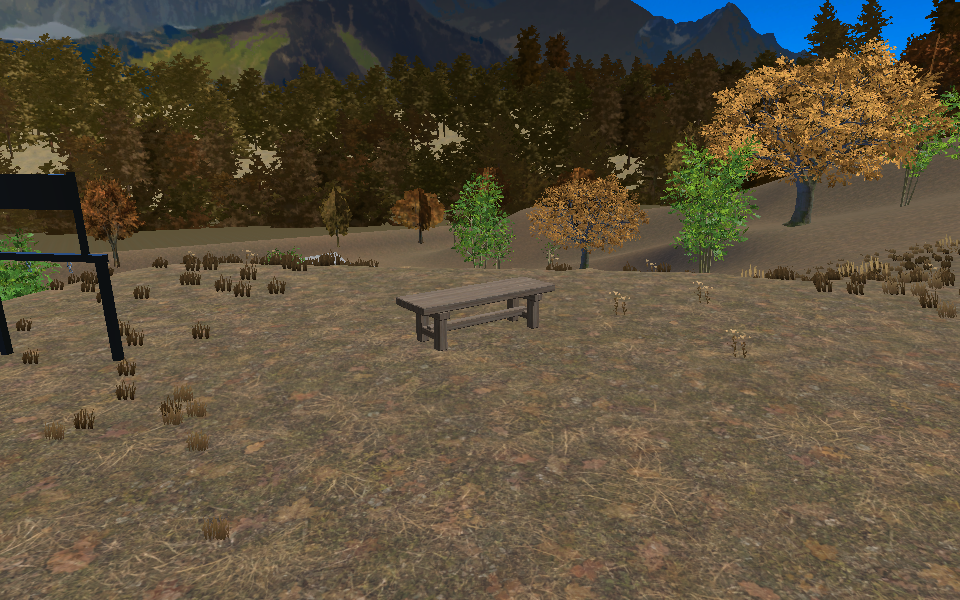
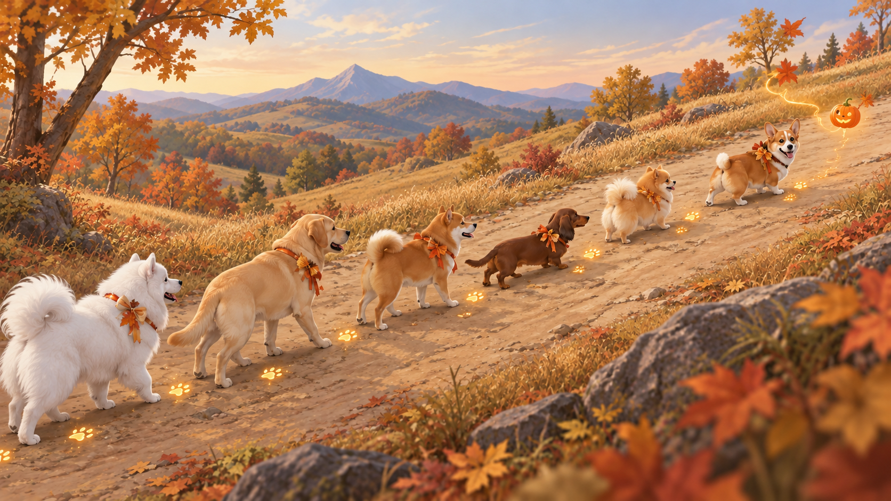
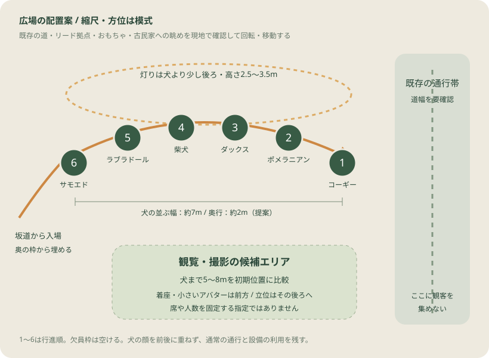

道の途中から始まる
門から全周を歩く必要はありません。坂の曲がり角に灯りが現れ、犬の「ついておいで」で始まります。開始地点へ犬を集める準備は、本編の前に済ませます。
かぼちゃ灯りの坂道行進
道の途中に灯りがともり、いつもの犬たちが歩き出す。坂を登った先の広場で、葉っぱが六つのかぼちゃへ変わる。犬と歩く、3分40秒のハロウィン。
門から全周を歩く必要はありません。坂の曲がり角に灯りが現れ、犬の「ついておいで」で始まります。開始地点へ犬を集める準備は、本編の前に済ませます。
道中は犬の後ろをゆっくり歩く。移動を減らしたい人は広場で待ち、入場から最後の約1分半を見る。途中から来た人も、その時の場面から楽しめます。
かぼちゃの灯りが開いた後、10秒の撮影しやすい余韻を用意。犬の顔が見える明るさと、会話できる音量を守り、終わった後も犬と過ごせる流れへ。
ルートはAの区間を使い、3分40秒を基準に詳細化しました。時間・衣装・曲・参加条件は今回の提案。演目制作の着手や商品構成の確定とは分けて扱います。
保存した経路点から区間を切り出しました。先頭が節5を出て節16へ着くまで105秒。灯りは進行方向を示す程度にし、既存の道と秋の景色を舞台にします。
橙：行進区間 薄緑：前後の道 白丸：先頭
地形の見通し・道幅・観覧位置はこの地図だけでは判定できません。
開始前の集合、最後尾の遅れ、広場で半円へ入る横移動は別です。6匹の列は中心間1.8mで約9m。最後尾は先頭より約12秒遅れて到着する見積もりです。
節5手前の約9mに列を作れるか、節16の到着口から舞台へ入れるかを現地で確認します。隠し通路・新しい坂道・ステージ台の追加はこの企画に含めていません。

一緒に歩く：坂の途中で予告を見て、隊列の後ろへ。犬のすぐ横を塞がず、ゆっくり上がります。
広場で待つ：到着口を空けて、犬が見える候補位置へ。広場から坂道の全区間が見える前提にはしません。
途中から来たら：今の場面から参加。頭出しや強制ワープは行わず、広場の場所と残り時間を案内する提案です。
再生は説明用の時間プレビューです。犬の実アニメーションや音楽はまだ制作していません。スライダーに合わせて上の地図の先頭位置と、下の進行説明が変わります。
96 BPM・4/4なら1小節は2.5秒。下表は曲が完成する前のキュー案です。犬の足運びをBPMへ機械的に固定する指定ではありません。
| 時間 / 小節 | 場面 | 犬の動き | 音楽・灯り |
|---|


配置図はクリックで拡大できます。実際の道幅・方位・広場の設備を測る前の案です。
1 コーギー → 2 ポメラニアン → 3 ダックス → 4 柴犬 → 5 ラブラドール → 6 サモエド。仮の行進順です。先頭から奥の枠へ入り、後続と交差しにくい配置にします。
犬の中心間は約1.8m。図の半円は幅約7m・奥行約2mを初期案にし、6犬種の大きさと接地から調整します。全員の顔が正面から読めることを優先します。
2:10に先頭が到着、最後尾が約2:22に到着、2:30までに整列。成立しなければ音楽制作前に移動速度か入場時間を見直します。
おじぎは1匹ずつ1小節。犬種ごとに無理のない会釈・首かしげへ置き換えられる設計にします。
リード・呼ぶ・Fetch・洗浄・集合などで使用中の犬は対象外。開始前に参加犬を確定し、本編途中に増員しない提案です。
1〜5匹でも曲は3分40秒のまま。既存集合の考え方に合わせ、犬ごとの枠は詰めずに空ける。欠員の紹介小節は葉の間奏にし、その犬の灯りも省きます。0匹なら開始しません。
犬まで5〜8mを初期候補にし、灯りは高さ2.5〜3.5m。近く3〜5m・遠め10〜15m、目線0.4m・1.2m・1.6mで、犬と灯りが一緒に見えるかを比べます。
着座や小さいアバターは前方へ、立つ人は後ろへという自然な案内に留めます。カメラの固定や強制移動はありません。
第一案は、犬の通る帯と通常の通行帯を分ける配置です。公演のために道路を封鎖したり、カートを自動停止させたりする仕様はまだ採用していません。
道幅が足りなければこの配置では成立しません。演目の制作前に、犬6匹・歩く人・カート1台を置く代表場面で通行を確かめます。
ワールドの秋色と既存の犬を土台に、衣装は小さな首元のリボンと葉の飾り。光は犬を引き立てる場所へ置きます。数値のパレットは既存の景観材質が正本で、下は今回の演出の役割分けです。
| 要素 | 使う場面 | 初期の制作案 | 確認すること |
|---|---|---|---|
| 首元の飾り | 公演中 | 共通デザイン1種を6犬種へ合わせる。顔や胸を隠さない小さなリボン＋葉。 | 既存首輪・購入飾りと干渉する犬は追加装飾を省略。購入済みの見た目を保存値ごと変更しない。 |
| 先導のかぼちゃ | 0:00〜入場 | 1個。先頭より約1〜2m前、地面から約0.8〜1.2m。 | 坂で埋まらないか。犬の目と重ならないか。 |
| 肉球・葉の小さな軌跡 | 行進中 | 各犬の足元へ短く表示。長い光の線で道を埋めない。 | 歩行面が読み取れるか。透過が重なりすぎないか。 |
| 葉からかぼちゃへの変化 | 2:45〜3:20 | 犬の左右から葉を上げ、少し後ろの上空に最大6個の灯りを作る。 | 顔への被り、古民家への眺め、木の遮蔽、低視点の見え方。 |
| 軽減表示 | 公演全体 | 主要な灯りと犬は残し、微細な粒子・尾を減らす。点滅や強い画面全体の効果は使わない。 | PC・Quest・iOSで物語が同じように伝わるか。方式と負荷予算は実装設計で決める。 |
イメージ画は夕方の色味ですが、公演のために全員を夜へ切り替える決定はしていません。通常の明るさでも灯りの輪郭を見せ、マニュアル夜設定を含む既存の明るさとの関係は開催設計で確認します。
1小節2.5秒 × 88小節 = 220秒。3音の小さな合図を、登場・道中・フィナーレで形を変えて返す。今回専用の新しい主題を作る案です。
行進は軽いスネア、広場で弦とベルを少し足す。怖い音や突然の大音量を山場にせず、犬の動きと余白で楽しくします。歌詞・ナレーションは初期案では入れません。
導入10小節 → 行進42 → 入場8 → フィナーレ22 → 余韻6
開催区間の観客が同じ公演位置を聞ける方式を検討します。移動中の列と広場の両方を対象にし、複数の音源をただ重ねて二重に聞かせない設計が必要です。
曲の途中参加は同じ時刻から。音量は利用者の設定を尊重し、会話ができる状態を基準に調整します。音の範囲・方式はDES-LIV-001で具体化します。
会場でライブ音楽を聞いている間は通常BGMを抑え、終了・中止・会場退出で元の設定へ戻す案です。川音を含む環境音は必要な会場だけ調整し、全員一律に消す前提にしません。
拍手は観客の反応に任せ、録音した大きな歓声は入れない。足音と短い鈴は音楽を邪魔しない量にします。
節5手前の待機列、道中のすれ違い、節16から半円への入場を確認。特に最後尾到着後の約8秒、犬6匹＋観客＋カートの通行を先に見ます。
96 BPM・88小節を基準に作曲し、登場・行進・広場の代表場面を作る。音源が固まる前に、歩行速度と入場時間の調整を済ませます。
参加犬の確定、使用中の犬の保護、同時開催の排他、途中参加と中止後の復帰を接続。PC・Quest・iOSの見え方・音・負荷を確認して制作範囲を確定します。
Aの道、3分40秒、地上の一列から広場の半円へ。衣装は小さな首飾り、山場は「葉がかぼちゃの灯りに変わる」。終盤に10秒の撮影の余韻を置き、最後の5秒で消灯・解散します。
次に詰める中心は、半円を置く広場の向きと、道中のカートとの通行。場所が成立したら、この進行表を音楽・犬の動き・パーティクルの制作指示へ渡せます。
| 制作物 | 予定する単位 | 最初に確かめること |
|---|---|---|
| 楽曲とキュー | 新曲1本・12場面の時刻表 | 3:40の進行、入場に必要な時間、会話できる音量 |
| 犬の動き | 既存歩行＋開始/振り向き/おじぎ/ポーズ | 6犬種のモーション適合、坂の接地、列と半円の遷移 |
| 衣装 | 共通リボン1デザイン＋6犬種への合わせ | 耳・毛・既存飾り・首輪との干渉。利用中の外観へ戻せる |
| 光の演出 | 先導灯・足跡/葉・上昇/かぼちゃの弧・消灯 | 近距離と低視点の顔、透過の重なり、端末別負荷 |
| 開催の器 | 開始受付・参加者確定・公演時計・中止/復帰 | 1/3/6匹、0匹、途中参加、開催者退出、利用中犬との排他 |
本制作の前に代表場面を確認。粒子数・描画負荷・音声サイズの予算は測定後に決め、イメージ画の密度をそのまま再現する約束にはしません。
plan-a.template.html、キューはbuild-a.cjs、配置図はplan-a-layout.svg。node docs/plans/halloween-parade/build-a.cjsでplan-a.htmlを再生成する。Unity・楽曲・販売設定への書き込みは行わない。